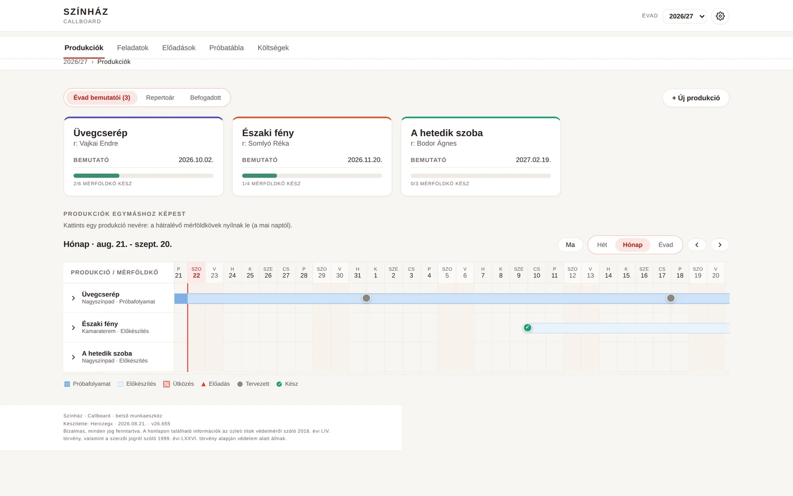
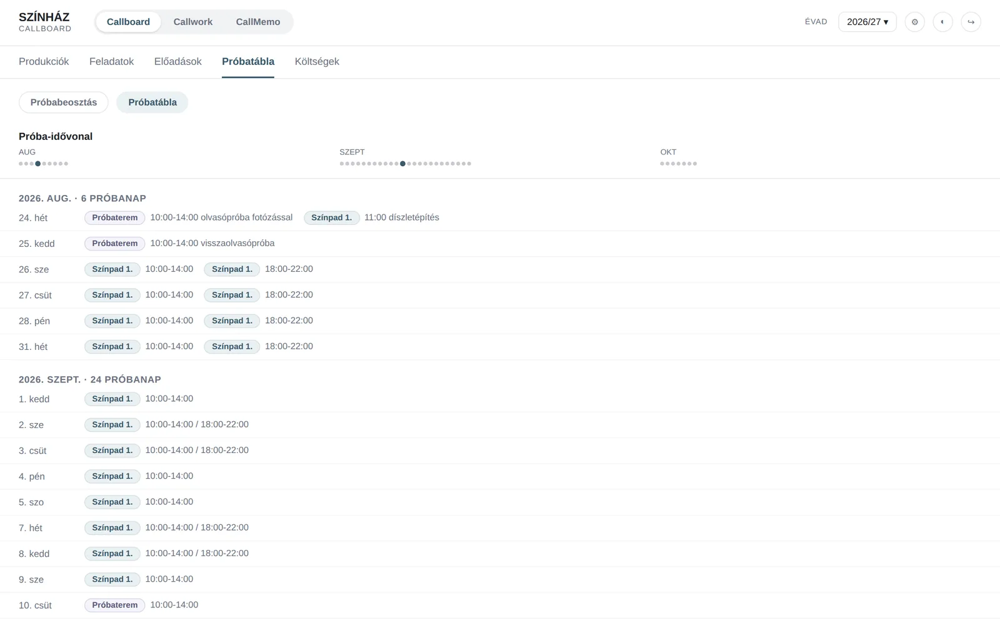
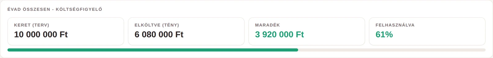
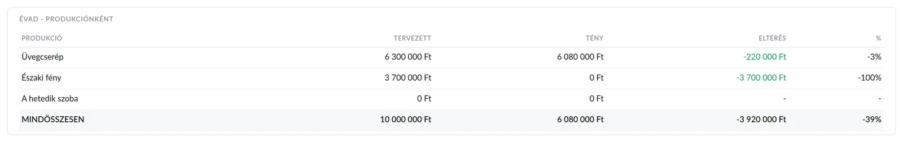

Callboard
Produkciós rendszer, éles használatban
Amit nem találtam meg készen, megépítettem. Ma ez viszi a színház napi üzemét.
A probléma
A produkciós tervezés Excelben és e-mailben élt. A próbatábla kiment levélben, és onnantól senki nem tudta, ki nyitotta meg, ki látta a módosítást, melyik változat érvényes. Egy elmaradt diszpó nem adminisztrációs bosszúság: az egy stábtag, aki nem jön be dolgozni.
A megoldás
Először Excelben modelleztem le a rendszert, mert azzal könnyebb volt megmutatni, mit akarok, mint elmagyarázni. Abból lett a webes változat, ma pedig három alkalmazás egy közös háttéren.
| alkalmazás | mire jó |
|---|---|
| Callboard | produkciók, próbatábla, diszpó, kiküldés, költségkeret |
| Callwork | a műszaki tárak heti beosztása és munkaidő-nyilvántartása |
| CallMemo | vezetői teendők, döntések, éves terv |
| néző oldal | belépés nélküli, megosztható próbatábla a stábnak |
A stábtag semmit nem telepít. A levélben kapott személyes linkje megnyílik a telefonján, és ha kiteszi a kezdőképernyőre, onnantól úgy viselkedik, mint egy alkalmazás.

Mit tud, amit egy táblázat nem
A kiküldés igazat mond. Csak a tényleges levélküldés után jelöl bármit kiküldöttnek. Nincs olyan, hogy a rendszer szerint megkapta, a valóságban nem.
Három kérdés, három válasz. Mikor és melyik napra ment ki. Változott-e azóta. És pontosan mi változott, mezőnként, miből mi lett.
Aki nem nyitotta meg, az látszik. Névvel. Innen a titkárság telefonál. A gép nem minősít: hogy mi érdemi változás, azt ember dönti el.
Minden kiküldés archívumba megy. PDF, a kiadó nevével és a kiküldés idejével.
Értesítés a telefonra, tartalom nélkül. Ami a próbatáblán van, az nem megy át idegen szolgáltatók szerverein.



Nem egy színházra szabva
A helyszínek, a szerepkörök, a névtár, a műszaki tárak és a próbatípusok beállítások, nem beégetett értékek. Ami ma egy házhoz kötött, az az arculat: a név és a logó a kódban áll, tehát másik társulatnál ezt kell kicserélni, nem a logikát átírni. A képeken ezért nincs színházi név és logó: a rendszer működése bármelyik repertoárszínházban ugyanez.
Számok
A tesztek a valódi alkalmazást futtatják, nem kimockolt egységeket. Keretrendszer nélküli JavaScript, felhő-háttér, telepítés nélküli, platformfüggetlen mobilhasználat.
Amit a fejlesztés tanított
A csatorna mindig esetleges lesz. Az e-mail elhal, az értesítés kézbesítése nem garantált, a telefon néma. Nem jobb csatornát kell keresni, hanem azt elérni, hogy a hiány időben látszódjon. A végső csatorna az ember: a titkárság felveszi a telefont.
Aki hibát jelez, annak igaza van. Az első éles próbán négy dolgot jeleztem vissza a fejlesztésnek. Mind a négy valós volt, és a legsúlyosabb egy csendes adatvesztés, nem felületi hiba.
Ami mindenkinek egyszerre megy ki, azt nem lehet visszaszedni. A társulatnak szóló bevezető levél szövegét mondatonként hagytam jóvá. A tesztek ma a jóváhagyott mondatokat őrzik.
Hol tart
Élesben, napi használatban. A kiküldési és értesítési lánc kész, a bevezetés folyamatban.
A Callboard a Radnóti Miklós Színház belső rendszere. A képernyőképek a demó példányról készültek: kitalált produkciók, kitalált nevek, a színház neve és logója nélkül. Valós adatot nem tartalmaznak.